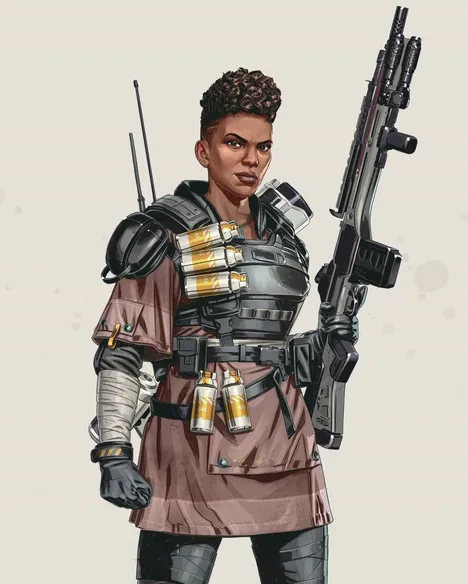
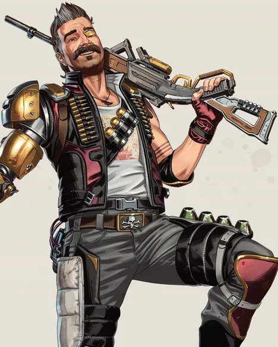
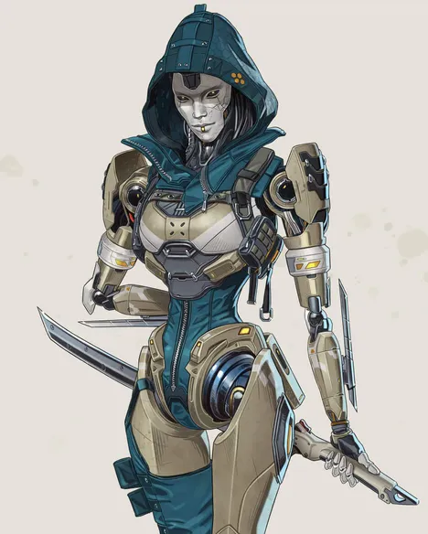
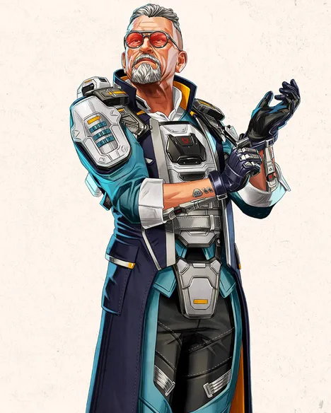

방갈로르(Bangalore)
- 패시브-더블 타임(Double Time)
- 달리는 도중에 공격당하면 잠시 동안 더 빨리 움직입니다.
- 전술-스모크 런처(Smoke Launcher)
- 연막 장벽을 만드는 고속 연막탄을 발사합니다.
- 얼티밋 스킬-롤링 선더(Rolling Thunder)
- 서서히 지역을 훑으며 공격하는 포격을 요청합니다.

퓨즈(Fuse)
- 패시브-척탄병(GRENAIDER)
- 인벤토리 슬롯 하나에 수류탄을 더 담을 수 있습니다. 수류탄을 더 멀리, 빠르게, 정확하게 투척합니다.
- 전술-너클 클러스터(Knuckle Cluster)
- 공중에서 터지는 폭발물을 방출하는 클러스터 폭탄을 발사합니다.
- 얼티밋 스킬-마더로드(The Motherlode)
- 표적 지역을 불의 장벽으로 둘러싸는 폭탄을 발사합니다.

애쉬(Ash)
- 패시브-마크 포 데스(Marked for Death)
- 애쉬의 지도에는 최근 데스 박스의 위치가 표시됩니다. 데스 박스의 [H]를 누르면 생존한 공격자를 표시합니다[상자당 한번].
- 전술-아크 스네어(Arc Snare)
- 회전하는 올가미를 던져, 가장 먼저 가까이 접근하는 적에게 대미지를 주고 묶습니다.
- 얼티밋 스킬-위상 돌파(Phase Breach)
- 일방통행 포털을 열어 목표 지점으로 이동합니다.

매드 매기(Mad Maggie)
- 패시브-슬링(Sling)
- 슬링에 세 번째 무기를 보관합니다. 소지품 또는 캐릭터 유틸리티 액션을 통해 이용합니다. 슬링 무기는 부착물을 장착할 수 없습니다.
- 전술-휘슬러(Whistler)
- 적이 총기를 발사할 때마다 총기가 과열되는 발사체를 발사합니다. 무기가 과열되면 대미지를 입힙니다. 전술 버튼을 홀드해 조준을 고정합니다.
- 얼티밋 스킬-템페스트(Tempest)
- 근처 팀원이 빠른 장전 속도 및 무장 이동 속도, 무한 탄약 효과를 얻습니다. 발리스틱의 슬링 무기가 골드로 업그레이드됩니다.

발리스틱(Ballistic)
- 패시브-더블 타임(Double Time)
- 달리는 도중에 공격당하면 잠시 동안 더 빨리 움직입니다.
- 전술-스모크 런처(Smoke Launcher)
- 연막 장벽을 만드는 고속 연막탄을 발사합니다.
- 얼티밋 스킬-롤링 선더(Rolling Thunder)
- 서서히 지역을 훑으며 공격하는 포격을 요청합니다.
